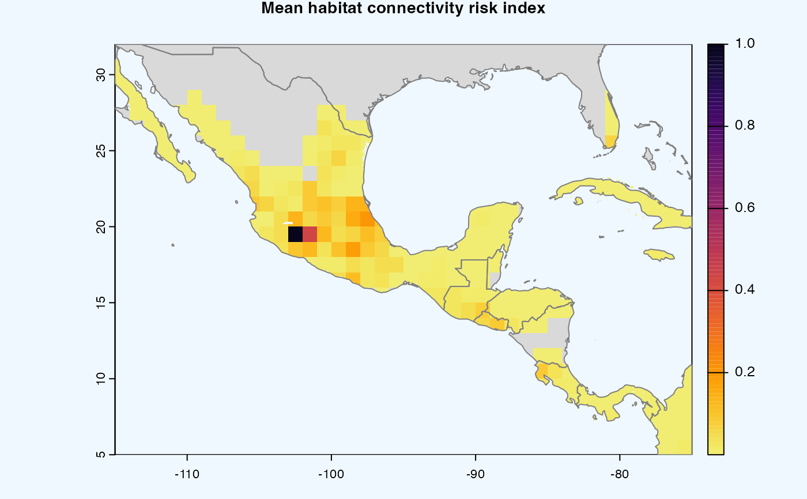
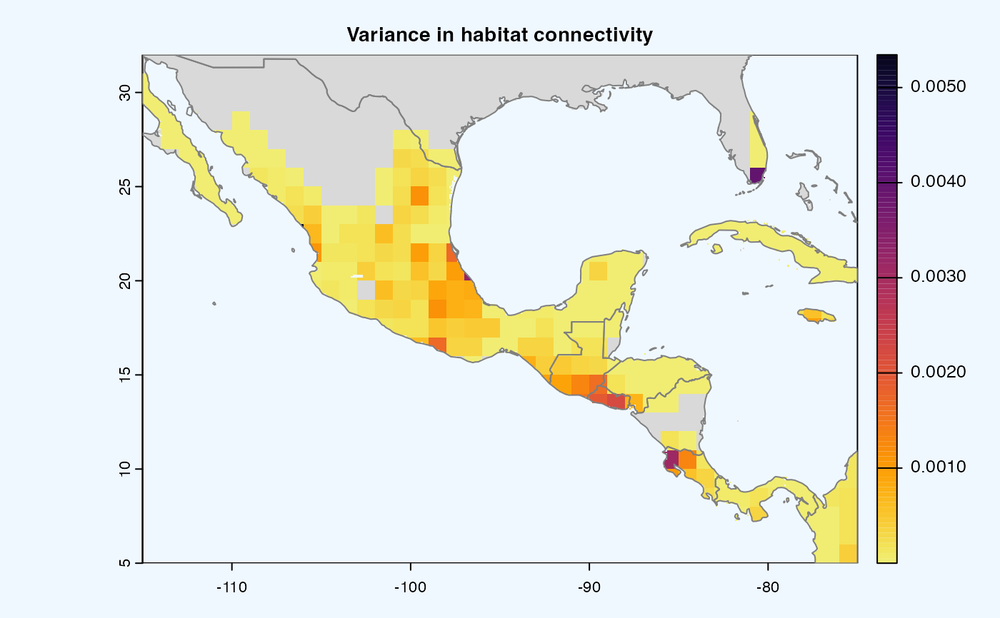
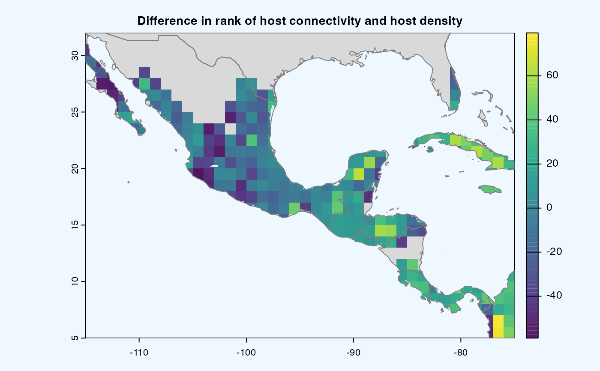
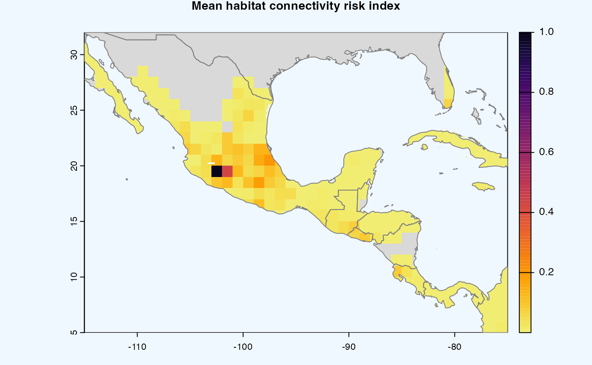
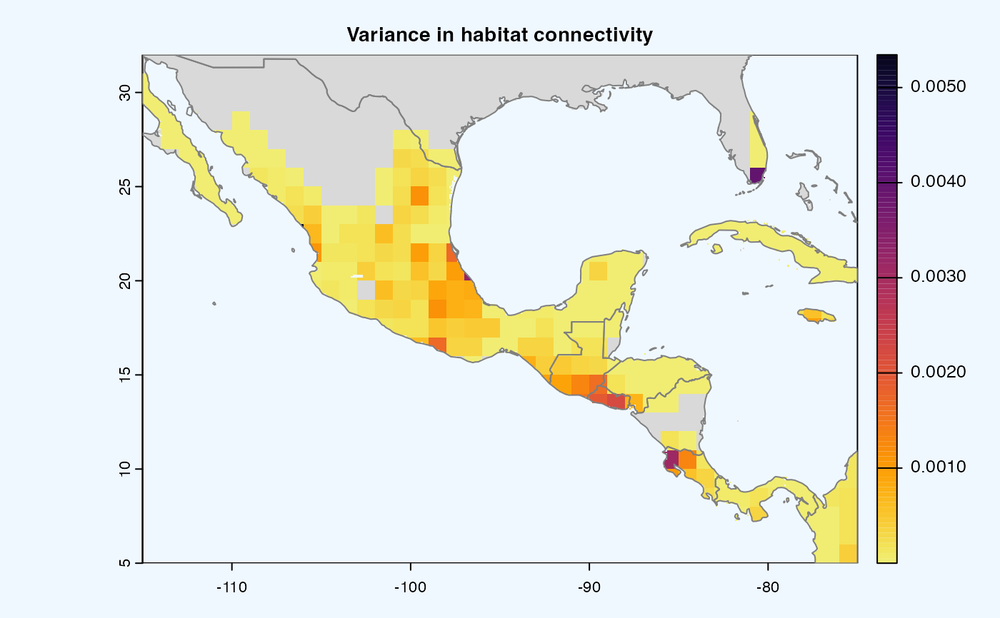
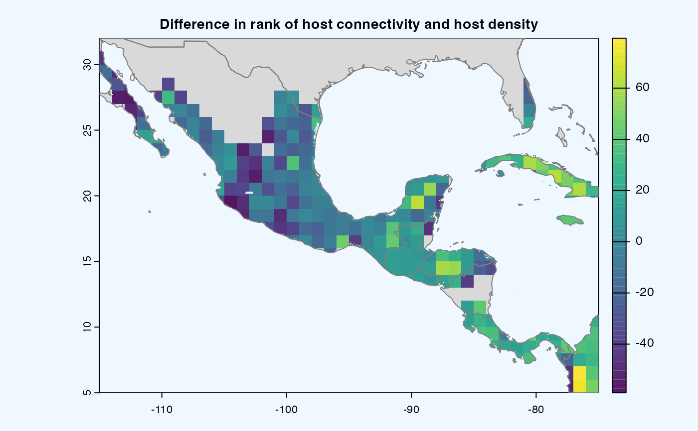

This function performs a sensitivity analysis across different values of habitat connectivity
for each location in a map.
For each combination of selected parameters, an index of habitat connectivity is calculated.
sensitivity_analysis() is a wrapper around sean() function.
msean()is a wrapper aroundsean()function. It has additional argument to specify maps which are calculated usingconnectivity()function. The maps are essentially the risk network.
Usage
sean(
rast,
global = TRUE,
geoscale = NULL,
agg_methods = c("sum", "mean"),
dist_method = "geodesic",
link_threshold = 0,
hd_threshold = 0,
res = reso(),
inv_pl = list(beta = c(0.5, 1, 1.5), metrics = c("betweeness", "NODE_STRENGTH",
"Sum_of_nearest_neighbors", "eigenVector_centrAlitY"), weights = c(50, 15, 15, 20),
cutoff = -1),
neg_exp = list(gamma = c(0.05, 1, 0.2, 0.3), metrics = c("betweeness", "NODE_STRENGTH",
"Sum_of_nearest_neighbors", "eigenVector_centrAlitY"), weights = c(50, 15, 15, 20),
cutoff = -1)
)
msean(
rast,
global = TRUE,
geoscale = NULL,
res = reso(),
...,
outdir = tempdir()
)Arguments
- rast
Raster object which will be used in analysis.
- global
Logical.
TRUEif global analysis,FALSEotherwise. Default isTRUE- geoscale
Numeric vector. Geographical coordinates in the form of c(Xmin, Xmax, Ymin, Ymax) which EPSG:4326 in coordinate reference system. If
geoscaleis NuLL, the extent is extracted fromrast(SpatRaster) usingterra::ext().- agg_methods
Character. One or both the values - SUM, MEAN. Aggregation strategy for scaling the input raster to the desired resolution.
- dist_method
Character. The method to calculate the distance matrix.
- link_threshold
Numeric. A threshold value for link weight. All link weights that are below this threshold will be replaced with zero for the connectivity analysis. Link weights represent the relative likelihood of pathogen, pest, or invasive species movement between a pair of host locations, which is calculated using gravity models based on host density (or availability) and dispersal kernels.
- hd_threshold
Numeric. A threshold value for host density. All locations with a host density below the selected threshold will be excluded from the connectivity analysis, which focuses the analysis on the most important locations. The values for the host density threshold can range between 0 and 1; if value is 1, all locations will be excluded from the analysis and 0 will include all locations in the analysis. Selecting a threshold for host density requires at least knowing what is the maximum value in the host density map to avoid excluding all locations in the analysis. if value is 1, all locations will be excluded from the analysis and 0 will include all locations in the analysis. Selecting a threshold for host density requires at least knowing what is the maximum value in the host density map to avoid excluding all locations in the analysis.
- res
Numeric. Resolution of the raster. Default is
reso().- inv_pl
List. A named list of parameters for inverse power law. See details.
- neg_exp
List. A named list of parameters for inverse negative exponential. See details. All locations with a host density below the selected threshold will be excluded from the connectivity analysis, which focuses the analysis on the most important locations. The values for the host density threshold can range between 0 and 1;
- ...
arguments passed to
sean()- outdir
Character. Output directory for saving raster in TIFF format. Default is
tempdir().
Details
When global = TRUE, geoscale is ignored and global_scales() is used by default.
The functions sean() and msean() perform the same sensitivity analysis, but they differ in their return value.
The return value of msean() is GeoNetwork,
which contains the result from applying the connectivity() function on the habitat connectivity indexes.
Essentially, the risk maps.
In msean(), three spatRasters are produced with the following values.
For each location in the area of interest,
the mean in habitat connectivity across selected parameters is calculated.
For each location in the area of interest,
the variance in habitat connectivity across selected parameters is calculated.
For each location in the area of interest,
the difference between the rank of habitat connectivity and the rank of host density is calculated.
By default, each of these spatRasters is plotted for visualization.
References
Yanru Xing, John F Hernandez Nopsa, Kelsey F Andersen, Jorge L Andrade-Piedra, Fenton D Beed, Guy Blomme, Mónica Carvajal-Yepes, Danny L Coyne, Wilmer J Cuellar, Gregory A Forbes, Jan F Kreuze, Jürgen Kroschel, P Lava Kumar, James P Legg, Monica Parker, Elmar Schulte-Geldermann, Kalpana Sharma, Karen A Garrett, Global Cropland .connectivity: A Risk Factor for Invasion and Saturation by Emerging Pathogens and Pests, BioScience, Volume 70, Issue 9, September 2020, Pages 744–758, doi:10.1093/biosci/biaa067
Hijmans R (2023). terra: Spatial Data Analysis. R package version 1.7-46, https://CRAN.R-project.org/package=terra
See also
Uses connectivity()
Uses msean() inv_powerlaw() neg_exp()
Examples
# \donttest{
avocado <- cropharvest_rast("avocado", "monfreda")
# global
ri <- sean(avocado) # returns a list of GeoRasters
mri <- msean(rast = avocado) # returns GeoNetwork object
#>
|---------|---------|---------|---------|
===
 #>
|---------|---------|---------|---------|
=====
|---------|---------|---------|---------|
==========
#>
|---------|---------|---------|---------|
=====
|---------|---------|---------|---------|
==========
 #>
|---------|---------|---------|---------|
===
#>
|---------|---------|---------|---------|
===
 # non-global
# geoscale is a vector of xmin, xmax, ymin, ymax
# returns GeoRasters object
ri <- sean(avocado, global = FALSE, geoscale = c(-115, -75, 5, 32))
ri
#> class : GeoRasters
#> rasters : 14
#> global : FALSE
# returns GeoNetwork object
mri <- msean(rast = avocado, global = FALSE, geoscale = c(-115, -75, 5, 32))



mri
#> class : GeoNetwork
#> host density : 27 , 40 (nrow, ncol) SpatRaster
#> mean : /var/folders/r5/zggvft9d3yn5kh51wqp78rd00000gn/T//RtmpQmdzTP/plots/mean_20240227050334213396.tif
#> mean raster : 324 , 480 (nrow, ncol)
#> variance : /var/folders/r5/zggvft9d3yn5kh51wqp78rd00000gn/T//RtmpQmdzTP/plots/variance_20240227050334859388.tif
#> variance raster : 324 , 480 (nrow, ncol)
#> difference : /var/folders/r5/zggvft9d3yn5kh51wqp78rd00000gn/T//RtmpQmdzTP/plots/difference_20240227050335454914.tif
#> difference raster : 324 , 480 (nrow, ncol)
# }
# non-global
# geoscale is a vector of xmin, xmax, ymin, ymax
# returns GeoRasters object
ri <- sean(avocado, global = FALSE, geoscale = c(-115, -75, 5, 32))
ri
#> class : GeoRasters
#> rasters : 14
#> global : FALSE
# returns GeoNetwork object
mri <- msean(rast = avocado, global = FALSE, geoscale = c(-115, -75, 5, 32))



mri
#> class : GeoNetwork
#> host density : 27 , 40 (nrow, ncol) SpatRaster
#> mean : /var/folders/r5/zggvft9d3yn5kh51wqp78rd00000gn/T//RtmpQmdzTP/plots/mean_20240227050334213396.tif
#> mean raster : 324 , 480 (nrow, ncol)
#> variance : /var/folders/r5/zggvft9d3yn5kh51wqp78rd00000gn/T//RtmpQmdzTP/plots/variance_20240227050334859388.tif
#> variance raster : 324 , 480 (nrow, ncol)
#> difference : /var/folders/r5/zggvft9d3yn5kh51wqp78rd00000gn/T//RtmpQmdzTP/plots/difference_20240227050335454914.tif
#> difference raster : 324 , 480 (nrow, ncol)
# }